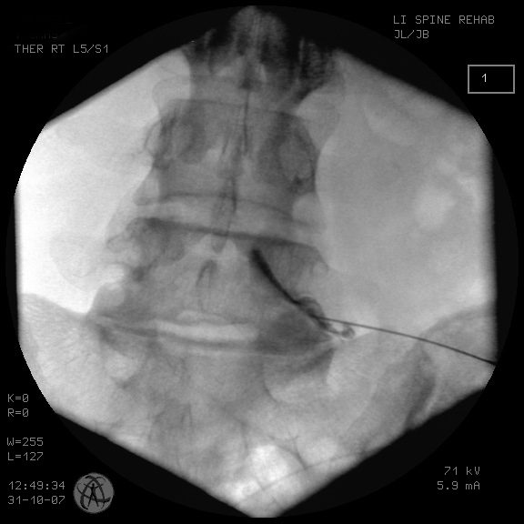

Em resumo
- A maioria das dores nas costas e no pescoço melhora sem cirurgia.
- Dor que desce para a perna ou o braço, perda de força ou dormência pedem avaliação.
- Estenose e espondilolistese costumam causar dor ao caminhar e cansaço nas pernas.
- O tratamento começa pela opção menos invasiva que resolve o problema.
Dor lombar
Por que a lombar dói
A dor lombar pode vir dos músculos, dos discos, das articulações entre as vértebras, dos ligamentos ou dos nervos. Na maioria das crises não existe uma lesão grave, e a dor cede em dias ou poucas semanas com medidas simples.
Quando a dor passa de três meses ou volta repetidamente, vale procurar a causa para tratar de forma dirigida.
Dor facetária
As facetas são as pequenas articulações que unem uma vértebra à outra. Com o desgaste, elas podem se tornar uma fonte de dor. A dor facetária costuma ser sentida na lombar, às vezes indo para as nádegas e a parte de trás das coxas, e piora ao inclinar o tronco para trás ou ao ficar muito tempo em pé.
Exames de imagem nem sempre mostram com clareza se a dor vem das facetas. Por isso o bloqueio facetário é usado também como teste diagnóstico.

Sinais de alerta
- Dor depois de queda ou acidente.
- Febre ou perda de peso sem explicação.
- Dor que acorda à noite e não melhora com repouso.
- Perda de força, dormência na região íntima ou alteração para urinar ou evacuar.
- História de câncer ou de osteoporose.
Na presença de qualquer um deles, procure avaliação médica sem demora.
Tratamento
A base do tratamento é manter-se ativo, fazer reabilitação com fortalecimento e usar medicação quando necessário. Quando a dor facetária é confirmada, o bloqueio e a denervação por radiofrequência são opções sem cortes para um alívio mais duradouro.
Cirurgia é exceção na dor lombar e fica reservada para causas específicas, como instabilidade ou compressão de nervos.
Dor cervical e hérnia cervical
Por que o pescoço dói
A coluna cervical sustenta a cabeça e se movimenta muito. Postura mantida por longos períodos, tensão muscular, desgaste das articulações e dos discos e traumatismos estão entre as causas mais comuns de dor. Na maior parte das vezes, os sintomas melhoram em poucos dias ou semanas.
Quando a dor não se resolve em cerca de dois meses, ela tende a se tornar crônica e pode vir acompanhada de perda de movimento.
Hérnia de disco cervical
Quando um disco do pescoço comprime uma raiz nervosa, a dor irradia para o ombro, o braço e a mão, com formigamento, dormência ou fraqueza. É o equivalente, no braço, da dor ciática na perna.
Sinais de alerta
- Dor depois de acidente ou queda.
- Perda de força no braço ou na mão.
- Dificuldade com movimentos finos, como abotoar a roupa ou escrever.
- Desequilíbrio ou insegurança para caminhar.
- Febre ou perda de peso sem explicação.
Dificuldade com as mãos e desequilíbrio podem indicar compressão da medula, a mielopatia cervical, e pedem avaliação rápida.
Diagnóstico
O exame físico avalia força, sensibilidade e reflexos nos braços e nas pernas. A ressonância magnética mostra discos, nervos e medula. Radiografias ajudam a avaliar o alinhamento e a estabilidade.
Tratamento
Afastada a necessidade de cirurgia, o tratamento é clínico e fisioterápico. A fisioterapia ajuda a recuperar a função e a criar hábitos que reduzem o risco de novas crises. Bloqueios e radiofrequência podem ser usados em casos de dor que vem das facetas.
A cirurgia é considerada quando a dor no braço persiste, quando há perda de força ou quando existe compressão da medula. Em casos selecionados, a artroplastia cervical permite tratar a hérnia preservando o movimento do pescoço.
Estenose do canal lombar
O que é
Os nervos que vão para as pernas passam por dentro de um canal formado pelas vértebras. Com o desgaste dos discos e das articulações, e com o espessamento dos ligamentos, esse canal pode ficar mais estreito e apertar os nervos. É uma condição mais comum depois dos 60 anos.
Sintomas
- Dor, peso, formigamento ou cansaço nas pernas ao caminhar ou ficar muito tempo em pé.
- Alívio ao sentar ou ao inclinar o corpo para a frente, como ao se apoiar no carrinho do supermercado.
- Distância de caminhada cada vez menor.
- Dor lombar associada, em muitos casos.
Diagnóstico
A história é bem característica e o exame físico ajuda a afastar outras causas, como problemas de circulação nas pernas, que provocam sintomas parecidos. A ressonância magnética mostra onde e quanto o canal está estreitado.
Tratamento
O primeiro passo é o tratamento clínico: fisioterapia, exercícios, medicação e, em alguns casos, infiltrações. Muitas pessoas convivem bem com a estenose dessa forma.
Quando a dor limita a caminhada e a rotina apesar do tratamento, ou quando há perda de força, a cirurgia de descompressão abre espaço para os nervos. Em casos selecionados, ela pode ser feita por via endoscópica. Se houver instabilidade associada, pode ser necessária uma artrodese.
Espondilolistese
O que é
Na espondilolistese, uma vértebra desliza para a frente sobre a que está logo abaixo. Há dois tipos principais. No degenerativo, mais comum depois dos 50 anos, o desgaste dos discos e das articulações permite o escorregamento. No ístmico, existe uma falha em uma parte do osso da vértebra, a espondilólise, muitas vezes presente desde a juventude.
Sintomas
- Dor lombar que piora em pé ou ao inclinar o tronco para trás.
- Dor, formigamento ou cansaço nas pernas, quando há compressão de nervos.
- Rigidez e encurtamento dos músculos de trás das coxas.
Muitas pessoas têm um pequeno escorregamento e nunca sentem nada.
Diagnóstico
Radiografias em pé, incluindo imagens com o tronco flexionado e estendido, mostram o grau do escorregamento e se há movimento anormal entre as vértebras. A ressonância magnética avalia a compressão dos nervos.
Tratamento
O tratamento começa com reabilitação, fortalecimento da musculatura do tronco e medicação. Bloqueios podem ajudar no controle da dor.
A cirurgia é considerada quando a dor ou os sintomas nas pernas persistem apesar do tratamento, ou quando o escorregamento progride. O procedimento mais usado é a artrodese, que estabiliza as vértebras e, quando necessário, descomprime os nervos.